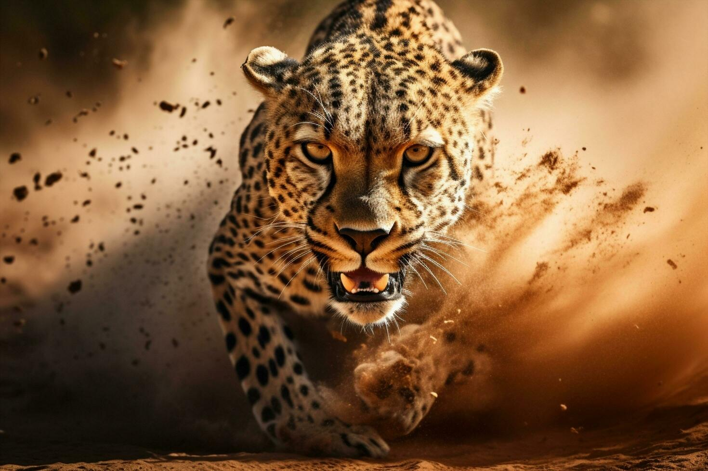
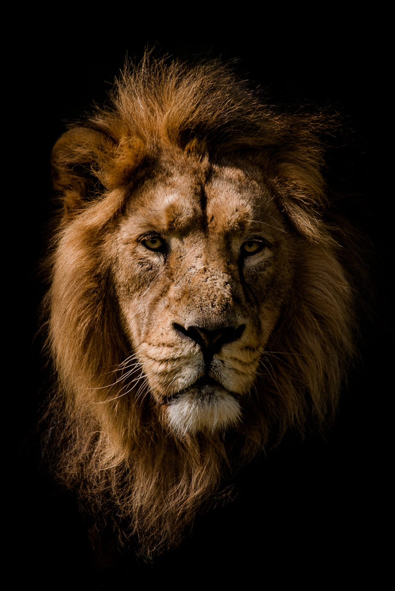
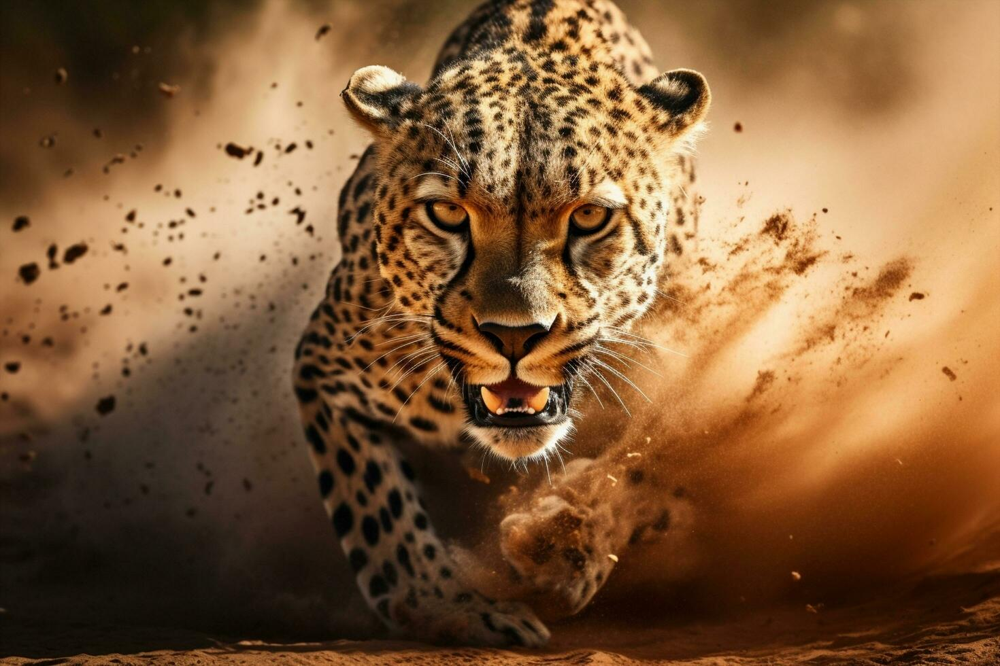
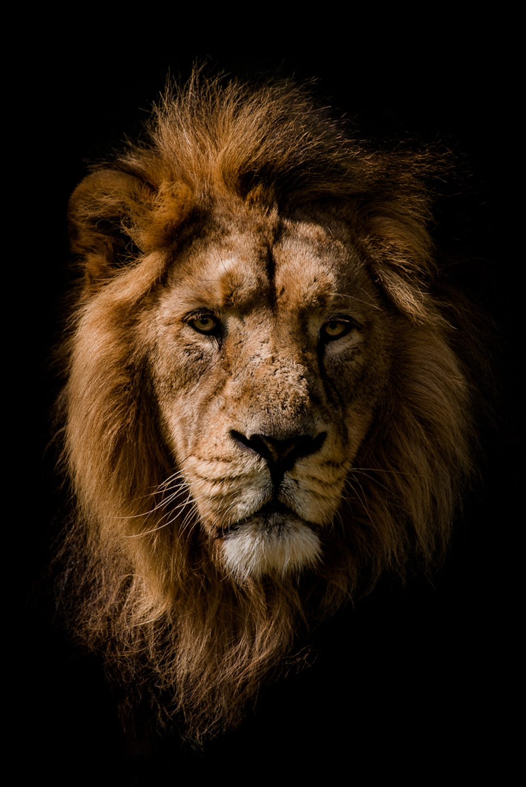
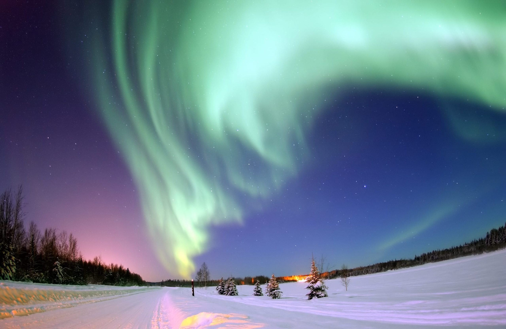
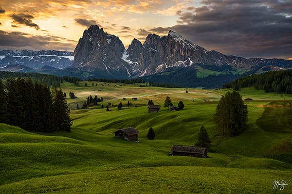
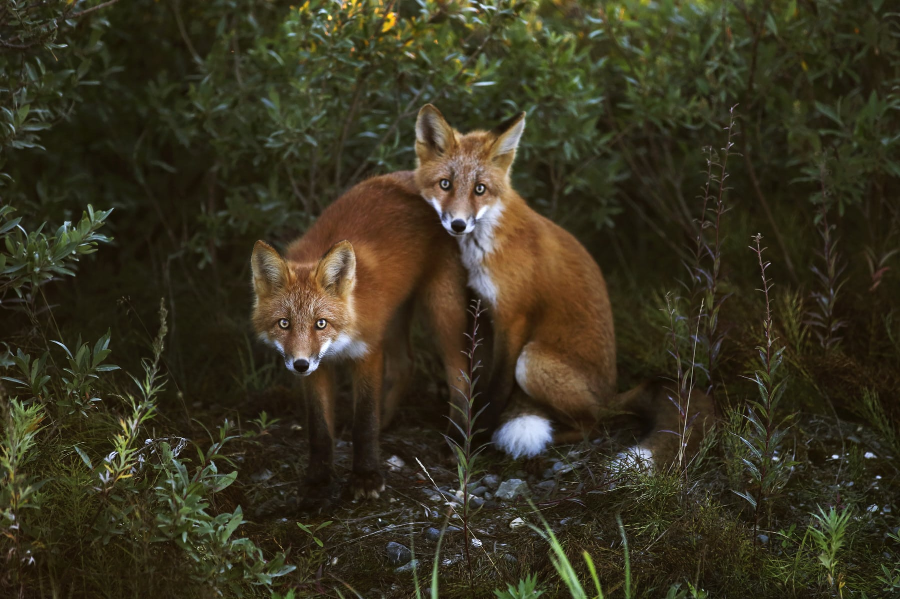
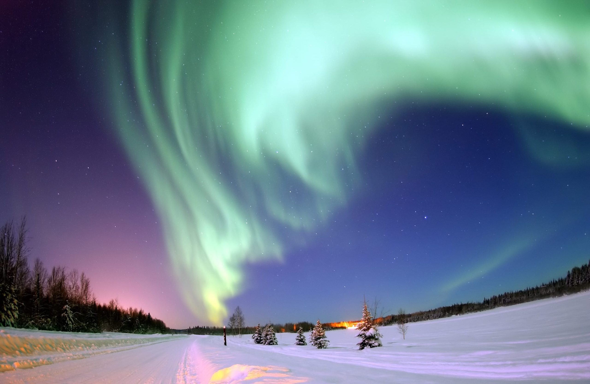
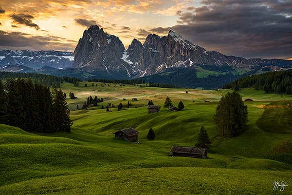
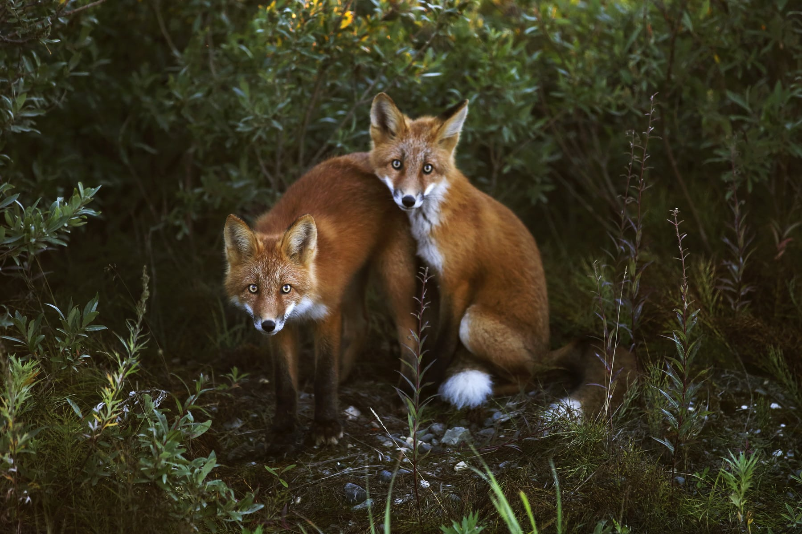

Join my Photography Journey
Passionate about capturing moments frozen in time, my lens becomes an extension of my vision, weaving stories through the play of light and shadow. With each click, I aim to encapsulate the essence of fleeting emotions and the beauty of the world around us, translating them into timeless images that evoke nostalgia and wonder. Through photography, I seek to explore the intricacies of life, celebrating both the extraordinary and the mundane with equal reverence.

 




 




